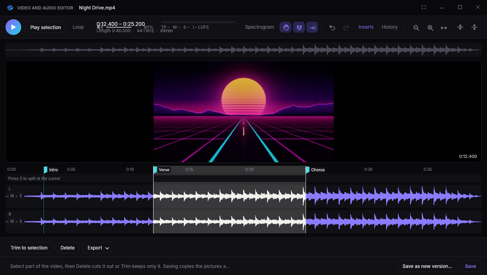
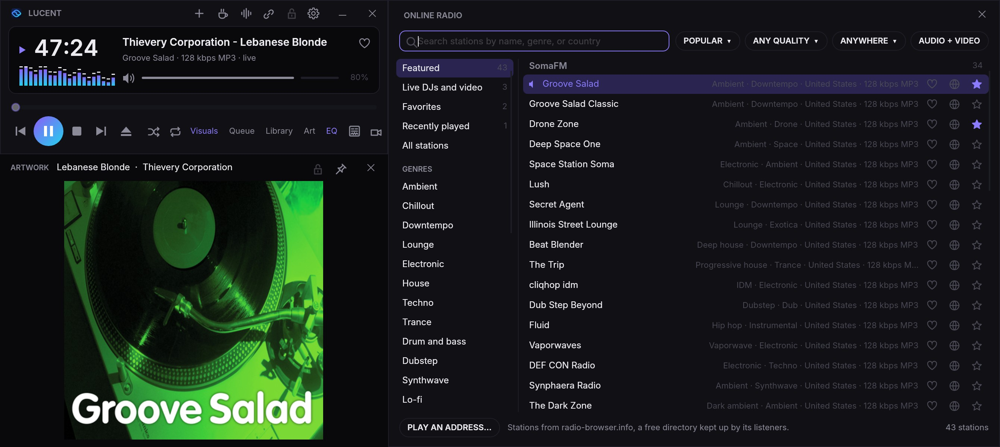
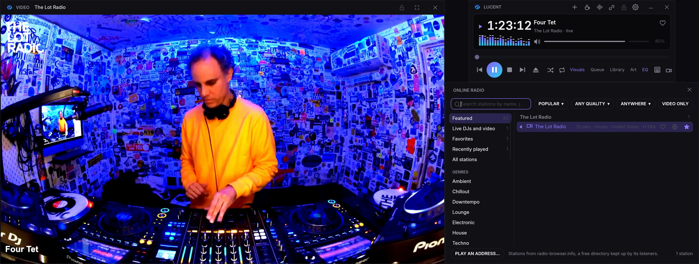
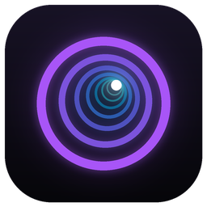

See what you’re hearing.
Lucent is a free music and video player for Windows and Mac. Built for audio nerds, made for everyone. It plays your library, streaming apps, and internet radio, with a video and audio editor, studio analyzer, and 32-band EQ built in. Every song comes alive with 448 visuals drawn live on your graphics card.
Windows 10 and 11 · macOS 12 or later · Updates itself
For streaming listeners
The Best of Both Worlds
Keep Spotify, Apple Music, TIDAL, Pandora, SoundCloud, or YouTube for the music. Hide the app and watch it play in Lucent instead.
- Your library stays put. Nothing to move or sync.
- Control it from Lucent. Play, skip, and volume, plus shuffle, repeat, playlists, and what's up next wherever the app allows.
- Visuals that hear only the music. A video or call in the background won't move them.
- A player worth looking at. Any skin or theme, even Lucent Classic.
The player
Your music, laid out your way.
The player, library, queue, equalizer, analyzer, artwork, and visuals each get their own resizable window. They snap together and move as one. Drag one onto another to swap them, lock any window in place, and save whole layouts by name.
Drag the queue onto the visuals to swap them.
448 visuals
Every frame is drawn live on your graphics card.
Every visual reacts to the bass, mids, treble, and beat. Ray-traced scenes, particle storms, fractals, and a chunky retro spectrum, plus 214 MilkDrop and 34 AVS presets in the same picker.
MilkDrop and AVS, built in
214 MilkDrop and 34 classic AVS presets, each credited to its artist. Your own .milk and .avs files import too, with a modern glow.
Visuals that know the song
Lucent finds each song's build-ups and drops, even on radio and streaming. The glow builds into a drop, and Auto cuts to a new visual as it hits.
Find one in seconds
Press V and type. Filter by tag, sort, and star favorites.
Up to 4K, with HDR
Automatic resolution keeps it smooth. Up to 4K, Ultra detail, and HDR highlights.
Record it to video
Save any song with any visual as a 4K, 60 fps MP4.
Make your own visuals
Each visual is one HLSL shader. Drop yours in a folder.
Video and audio editor
Edit, repair, and measure without leaving your player.
Right-click any song or video and open it in the editor. Cut, clean up, split stems, master, and undo anything. Your original stays safe.

Video too
Trim MP4 and MOV without re-encoding. Save frames, a GIF, or a smaller copy in H.264, HEVC, or just the sound.
Dock it anywhere
Snap the editor beside the player, or drag it free.
Split into stems
AI splits vocals, drums, bass, and the rest. Solo, mute, keep, or save them.
Tempo, key, and loops
BPM, key, a snapping beat grid, and a loop maker that finds seamless loops.
Plugin browser
Search your plugins, filter by type, and star favorites.
Plugin chains
Run VST3 effects live, save chains, or bring them from REAPER.
History
Every step listed. Click one to go back.
Clips like REAPER
Drag clips to move, trim, and fade. Overlap them to crossfade.
Every effect, one menu
Press E to search every built-in effect.
Cut, copy, and paste
Click-free joins, zero-crossing snap, and paste between apps.
Analyze
Peak, true peak, loudness, DC offset, stereo, and a clip finder.
Meters and views
True-peak and LUFS meters, and a spectrogram view.
Repair
Remove hum, clicks, noise, and DC offset.
EQ and dynamics
Parametric EQ, compressor, and true-peak limiter, heard live.
Tempo and pitch
Change tempo, pitch, or both.
Channels and markers
Swap, invert, mono, widen, and drop markers.
Analyzer
See the whole sound in detail.
A spectrogram, waveform, spectrum, stereo scope, and LUFS loudness meter for everything you play. Press Y.
Spectrogram
Every frequency as a heatmap.
Waveform
The signal, in step with the heatmap.
Spectrum
Live bars with peak marks.
Stereo spread
How wide the mix is.
Loudness
LUFS, loudness range, and true peak, to broadcast standards.
Pauses with the music so you can look closer. Click the loudness to measure again from now.
Studio equalizer
Faders like a mixing desk, over the music's live spectrum.
- 4 to 32 bands. Your curve carries over.
- See problem frequencies behind the curve.
- 15 presets, or save your own.
- Safe boosting. No distortion when you boost.
Skins and themes
Five skins. Eight themes. Any combination.
Skins set the shape, themes set the colors. Pick one of each and watch the player change.
Or go retro with the Lucent Classic pixel skin, or drop in any classic .wsz skin.
Theme: Midnight · Skin: Lucent
Internet radio
The best of internet radio, in high quality.
Thousands of stations, with Lucent's EQ, meters, and visuals on every one. Here's SomaFM's Groove Salad, with the station's art in the Artwork window.

Keep your favorite stations on the air.
SomaFM, Radio Paradise, Nightride FM, and NTS run on their listeners. Press the heart next to a station and Lucent opens that station's own donation page (or The Lot Radio's shop). Every cent goes to the station: Lucent takes no payments and no cut.
- High quality streams. MP3, AAC, HE-AAC, and HLS up to 320 kbps, buffered so a shaky connection doesn't drop out.
- Station art and song covers. The station's art fills the Artwork window, and Lucent finds the cover of each song that comes on.
- The good stuff, up front. SomaFM, FRISKY, Radio Paradise, Nightride FM, and NTS.
- Video stations. Watch live sets from The Lot Radio, or filter to Video only.
- Every genre. 31 genres, search, filters, favorites, and history.
Live video radio
Watch the DJ, not just the stream.
Stations that stream video, like The Lot Radio from its shipping container in Brooklyn, play in Lucent's Video window, live.

- Live, as it happens. HLS video streams play with the sound in sync, in a window you can resize, lock in place, or take full screen.
- Who's on now. Lucent shows the DJ playing on The Lot and NTS, from each station's schedule.
- Find more. Press Video only in the radio to see every station with a picture.
For people who care how it sounds
Everything else you'd reach for.
Gapless, crossfades, and bit-perfect
No gaps between tracks, or a crossfade if you like. Exclusive mode sends audio to your DAC untouched.
Library
Link folders, show any tag as a column, sort by it, find duplicates, and make playlists.
Artwork window
Big cover art, pinned on top if you like.
Keyboard first
A key for everything. Media keys work in the background, and play controls sit in the Dock and taskbar.
Last.fm
Scrobble what you play, from your music, streaming apps, and radio.
Picks up where you left off
Your queue and window layout are waiting next time.
Tag editor
Edit titles, artists, lyrics, and art safely.
Bandcamp and Beatport
Purchases land in your library automatically.
Visuals for any app
Visuals for anything your computer plays.
Spotify, Apple Music, TIDAL, Pandora, SoundCloud, and YouTube
Control them from Lucent's player, Pandora's thumbs included. Spotify's song info comes straight from the app.
Full screen, edge to edge
Visuals fill the whole screen, up to the top edge beside a MacBook's notch.
Videos
Play MP4 and MOV videos, with Lucent's EQ on the sound.
Your default player
Make Lucent your music player in one click.
Import from another player
Bring playlists, plays, and ratings from Apple Music, MusicBee, foobar2000, Plex, or YouTube Music.
Record live
Record from your audio interface, up to 192 kHz, with VST3 effects.
Track marks for DJ sets
Mark songs in long sets, saved as cue points.
Converter
Batch convert to MP3, FLAC, or WAV, tags included.
Report a bug in one click
Opens a report with the details filled in.
Plays MP3 · FLAC · WAV · AAC/M4A · ALAC · WMA · OGG Vorbis · Opus · AIFF · CAF · AC-3 · DTS · MKA/WebM · WavPack · APE

Get Lucent. Now in Beta
Free and open source under the MIT license, for Windows and Mac. Expect a few rough edges while it's in beta.
- System
- Windows 10 or 11, 64-bit. macOS 12 or later, on Apple silicon or Intel.
- Graphics
- Any Direct3D 11 GPU on Windows, or any Metal GPU on a Mac. A recent one gets you Ultra and 4K.
- Install
- Your account only on Windows, no admin rights. Into Applications on a Mac.
- Privacy
- Crash reports include where it crashed, your system, and your graphics card. Never your name, files, or music. Turn them off under Options, then Updates. This site counts visits and downloads, with no cookies and nothing personal.
Download the installer
Grab
Lucent-Setup.exefor Windows, or the.pkgfor your Mac, from the latest build.Run it
Windows installs for your account with Start menu shortcuts. On a Mac it goes into Applications.
Forget about updates
Lucent updates itself when you close it and shows what's new first. Want every build? Choose Every build under Options, then Updates. Rather choose when? Switch off Install updates automatically there.